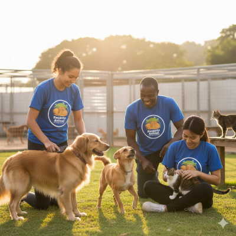

Programa de Adoção

Nosso programa conecta animais resgatados a famílias amorosas. Participe e adote um amigo!
Voluntariado
Venha fazer parte da nossa equipe de voluntários! Seu tempo pode transformar vidas.
Como Doar
Você pode contribuir com ração, medicamentos, ou doações financeiras.
Pix: 123.456.789-00 (CNPJ)